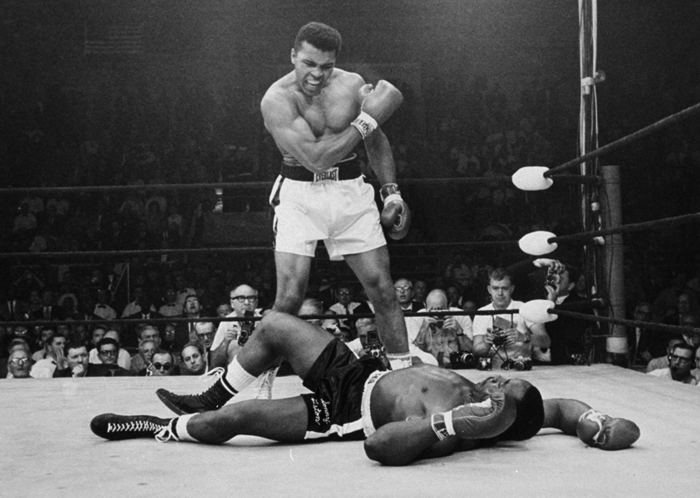
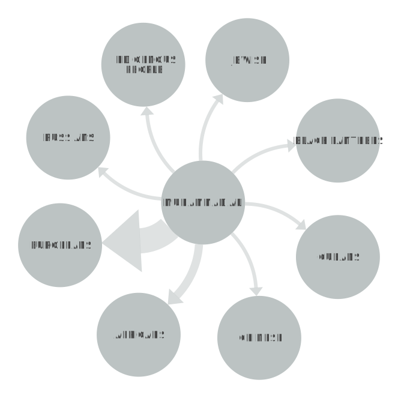

MUHAMMAD ALI
Muhammad Ali, the famous boxer and one of the greatest athletes of all time, was also a prominent figure in the Nation of Islam. He used his platform as a world-famous athlete to promote the organization's message of black pride and empowerment. Ali's interest in the Nation of Islam began in the 1960s, and he was particularly inspired by the teachings of Malcolm X. (as seen above). After converting to Islam and changing his name from Cassius Clay to Muhammad Ali, he became an outspoken advocate for the Nation of Islam's message of black nationalism and self-determination. He used his fame and popularity to spread the message of the Nation of Islam and its teachings, and his outspoken advocacy for these beliefs made him an influential figure during the Civil Rights Movement.
POSITIVE OR NEGATIVE RHETORICAL ACTION
The results from Muhammad Ali’s speech again show that he referenced more nonviolence than he did direct action. Despite Ali being a close friend with Malcolm X and a member of the NOI, Ali did not advocate for violence as much as people think. In Ali’s speech, he speaks frequently of the Vietnam War and he voices his heavy war opposition. Calling upon his listeners to resist the draft doesn’t indicate violence and falls categorically under nonviolence, which is why his speech has so many mentions of nonviolent resistance.
"BLACK IS BEST"
In "Black is Best," Muhammad Ali emphasized the importance of Black pride and unity in the face of discrimination and oppression. He then went on to challenge the notion of white superiority and argued that Black people were just as capable and deserving of success and respect. He called on Black people to embrace their heritage and culture, and to reject the idea that they needed to conform to white standards in order to succeed. Ali also criticized the Vietnam War and the way that Black soldiers were being treated. He argued that Black people were being asked to fight for a country that did not value their lives or rights. He urged Black soldiers to refuse to fight and to instead focus their energy on fighting for their own rights and freedoms at home.
NETWORK GRAPH
This graph of Ali’s speech is smaller compared to many of the other network graphs, which is due to the fact the speech itself is very short. Ali refers to fewer groups and orgs, but of the ones he does refer to, the most popular are Europeans and Africans. The European reference most likely stems from Ali’s references to the nationality and how they, especially European-Americans, have contributed to systemic racism so prevalent in American society.